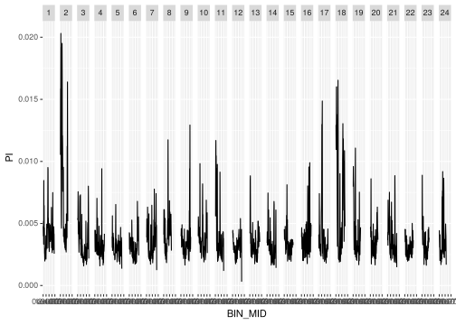
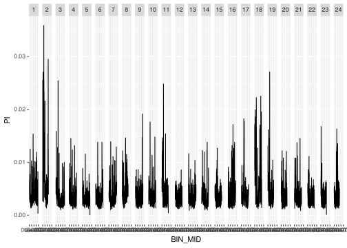

Nucleotide divergence
2021-09-30
1 Load libraries
library(here)
library(tidyverse)
library(karyoploteR)2 Snakemake pipeline to process VCF and extract data
https://github.com/brettellebi/mikk_genome/tree/master/code/snakemake/nucleotide_diversity
Steps
- Filter MIKK panel VCF for non-sibling lines (N = 63).
- Use
VCFtools’s--window-pito calculate nucleotide divergence in different-sized windows.
3 Process data
Data location: /nfs/research/birney/users/ian/mikk_genome/nucleotide_divergence
3.1 Read in data
# Set location of data
in_dir = "/nfs/research/birney/users/ian/mikk_genome/nucleotide_divergence"
in_files = list.files(in_dir, full.names = T)
dat_list = lapply(in_files, function(IN_FILE) {
# Read in
readr::read_delim(IN_FILE,
delim = "\t",
col_types = c("ciiid")) %>%
# Remove MT
dplyr::filter(CHROM != "MT") %>%
# Make CHR an integer
dplyr::mutate(CHROM = as.integer(CHROM)) %>%
# Create middle of bin
dplyr::mutate(BIN_MID = ((BIN_END - BIN_START - 1) / 2) + BIN_START )
})
names(dat_list) = basename(in_files) %>%
str_remove(".windowed.pi")4 Karyoplot
4.1 Set up scaffold
med_chr_lens = read.table(here::here("data",
"Oryzias_latipes.ASM223467v1.dna.toplevel.fa_chr_counts.txt"),
col.names = c("chr", "end"))
# Add start
med_chr_lens$start = 1
# Reorder
med_chr_lens = med_chr_lens %>%
dplyr::select(chr, start, end) %>%
# remove MT
dplyr::filter(chr != "MT")
# Create custom genome
med_genome = regioneR::toGRanges(med_chr_lens)4.2 Plot
# Test with ggplot
dat_list$`1000000` %>%
ggplot() +
geom_line(aes(BIN_MID, PI)) +
facet_grid(cols = vars(CHROM))
dat_list$`500000` %>%
ggplot() +
geom_line(aes(BIN_MID, PI)) +
facet_grid(cols = vars(CHROM))
dat_list$`100000` %>%
ggplot() +
geom_line(aes(BIN_MID, PI)) +
facet_grid(cols = vars(CHROM))
# set file name
file_name = paste("20210930_", "1Mb", ".png", sep = "")
file_out = here::here("docs/plots/nucleotide_diversity", file_name)
png(file=file_out,
width=13000,
height=1000,
units = "px",
res = 300)
# Plot ideogram
kp = karyoploteR::plotKaryotype(med_genome, plot.type = 5)
# Add base numbers
karyoploteR::kpAddBaseNumbers(kp, tick.dist = 5000000, cex = 0.7)
# Set y-axis limits
## Get max
round.choose <- function(x, roundTo, dir = 1) {
if(dir == 1) { ##ROUND UP
x + (roundTo - x %% roundTo)
} else {
if(dir == 0) { ##ROUND DOWN
x - (x %% roundTo)
}
}
}
y_max = round.choose(max(dat_list$`1000000`$PI), 0.01, 1)
karyoploteR::kpAxis(kp, ymin=0, ymax=y_max )
# Add lines
lwd = 1
karyoploteR::kpLines(kp,
chr = dat_list$`1000000`$CHROM,
x = dat_list$`1000000`$BIN_MID,
y = dat_list$`1000000`$PI,
ymax = y_max,
r0=0, r1 = 1,
lwd = lwd)
dev.off() file_out = here::here("docs/plots/nucleotide_diversity/20210930_1Mb.png")
knitr::include_graphics(file_out)